The developer's emotional companion
GitHub tracks what you did. DuoGit makes you want to do it again. A cross-platform mobile app that turns cold commit data into motivating emotional feedback — filling the gap between utilitarian dev tools and generic gamification.
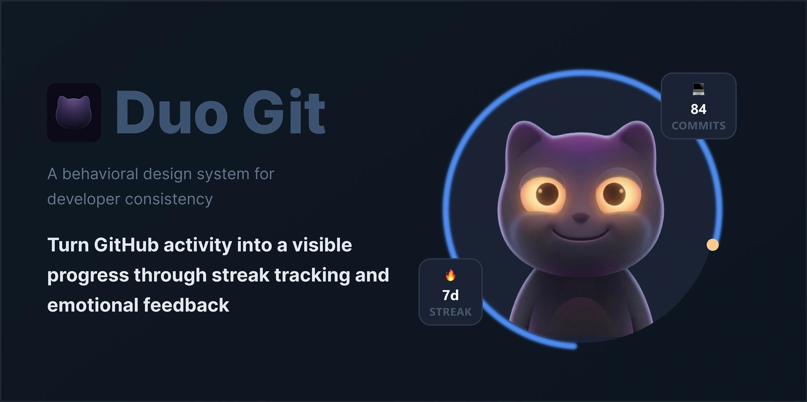
GitHub lacks the emotional dimension
The GitHub contribution graph is a powerful data visualization, but it offers purely passive, technical feedback. There are no proactive "nudges" or emotional reinforcements when a developer is at risk of breaking their streak.
Current solutions are either strictly utilitarian coding tools or generic gamification (habit-tracking) apps that don't differentiate meaningful code contributions from generic daily tasks.
The problem
Users care deeply about their coding streaks, but the native GitHub experience lacks the "nudge" factor. Generic apps require manual input, adding friction and failing to connect directly with developer workflows.
The opportunity
Define a new product category that addresses both technical tracking and emotional engagement. An interactive widget combining a familiar psychological trigger (a mascot) with direct GitHub API integration.
Users care deeply about their coding streaks is the claim the whole project rests on, and nothing on this page supports it. If it is wrong, the mascot, the league and the XP economy are all solving something nobody feels — which is worth half a day to find out before building more of them.
- A short survey in 2–3 developer communities, n ≥ 30: do you look at your contribution graph, how often, and what happens when it breaks
- Cheaper alternative — a teardown of what developers already do about it: the streak bots, the README badges, the commit-a-day repos that exist today
assets/img/duogit/research-survey.webp— 1600 × 900, responses as a chart
Those existing workarounds are the strongest evidence available and cost nothing to collect. People building workarounds is a problem proving itself.
Defining Success for DuoGit
The goal is not just to build a widget, but to foster positive behavioral change among developers — moving from sporadic, high-stress commits to consistent, stress-free daily routines.
Behavioral metrics
Daily commit rate. Target: from ~1 commit/day to ≥3 commits/day.
Weekly streak duration. Target: from 2–3 days to 5+ consecutive days.
Post-streak recovery. Target: recovery within 3 days, from <30% to >60%.
Emotional satisfaction
Perceived progress clarity. Target a 50% increase in user-reported clarity (survey 1–10).
Streak-related anxiety. Target a 40% reduction in reported stress.
Guilt-free motivation. Users should feel motivated by the ghost, not guilty.
From a contribution feed to something worth opening
The GitHub API hands you dates and counts. Everything below reshapes that same payload — no new data point was invented along the way.
What GitHub already gives you
115 contributions in a year, laid out as a grid. Technically complete and emotionally flat: it records what happened and asks nothing of you. Nothing here tells a developer whether today matters.
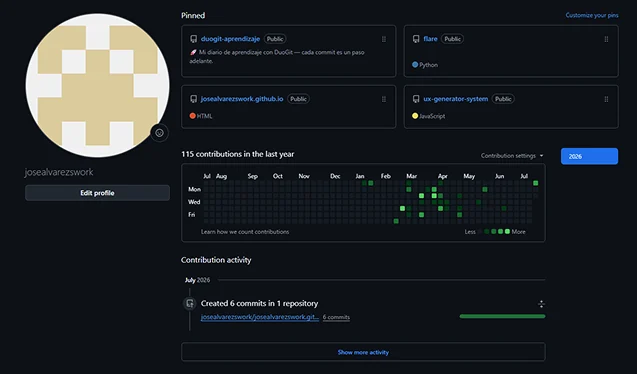
Three readings of the same payload
Counting commits rewards volume — a panic day with forty commits is not a good day. So the same feed is read three ways instead: as effort worth measuring, as a streak that has a state, and as a position among peers.
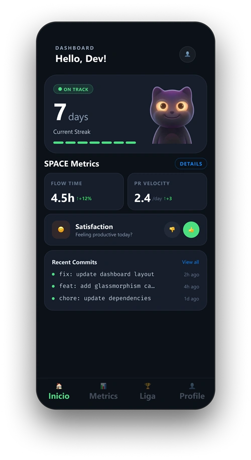
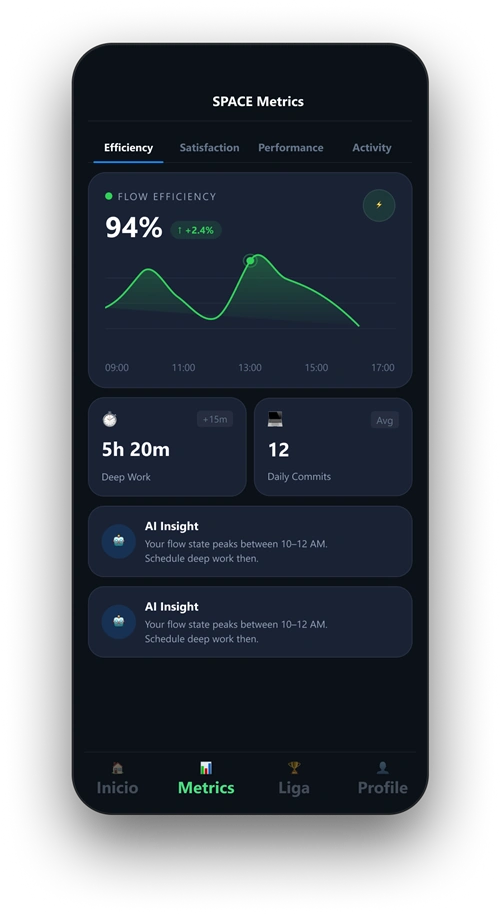
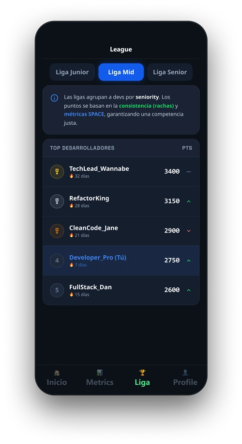
Four states have to stay one character
The mascot is a 3D asset, not a drawing per mood, because the four states have to read as the same creature under different light. The reference sheet is what the states are built against — same volumes, same eye geometry, same silhouette from every angle.
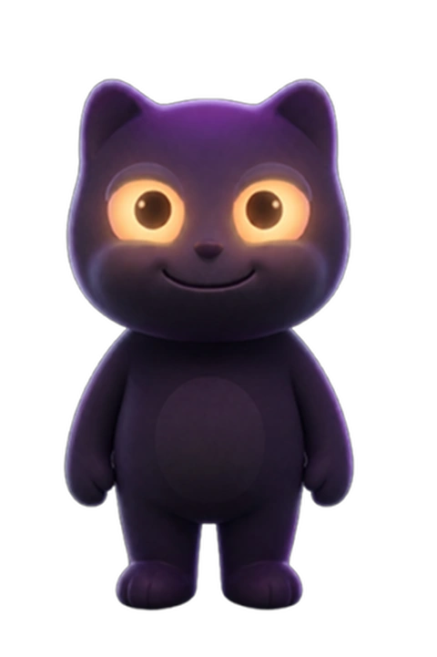
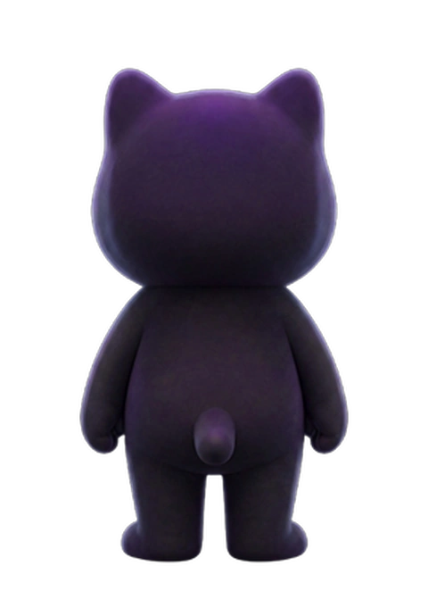
The "worried mascot" is a powerful psychological trigger.
Inspiration came from evaluating adjacent markets. Duolingo proved that emotional mascots and streak mechanics drive retention. However, no competitor combined these elements specifically for software development integration.
What success would look like
Targets, not results — DuoGit has no users yet. These are the numbers the behavioural design is aimed at, taken from what streak mechanics achieve in comparable products.
"Generic habit trackers lack software development context... they require manual input and do not differentiate meaningful code from generic tasks."
— UX Strategic Insight #4The Streak Journey Flow
The widget introduces a simple but effective daily loop based on the GitHub commit status. It seamlessly maps the emotional state of the character to the user's progress.
Active streak
User sees the Happy status, taps the widget, makes the daily commit, and the widget verifies the streak.
At risk
The widget warns — Quedan 5h. The user sees the alert, feels the urgency, and is driven to commit.
Streak lost
The streak breaks — 0 días. The user acknowledges the loss and is prompted to start again with a first commit.
Three widgets, one behavioral loop
Designed as the next phase, the widget layer surfaces the most critical state — streak health — directly on the home screen. Three sizes, each with a distinct role: reinforce progress, broadcast rank, or trigger recovery before the streak breaks.
The three sizes
Small — Progress. Reinforces streak momentum by rewarding daily commits with visible habit progress. One look = full context, no app open needed.
Small — Status. Delivers instant competitive awareness with league placement and points context. Motivates without friction.
Wide — Risk. Triggers intervention when streak health drops, using urgency and emotional cues to prompt recovery before the day ends.
Design Principle
A unified 60/40 zoning model across all sizes — data left, emotional state right — ensures instant scanning with zero cognitive load.
Visualizing GitHub Progress
DuoGit provides GitHub integration presented dynamically across the app's screens and widget states natively on iOS & Android, using emotional feedback to drive behavior.
Dynamic Mascot States
4 illustrated avatar expressions — Happy, Worried, Sad, Neutral — each with a unique glow halo. The emotional state mirrors commit activity in real time.
SPACE Metrics Dashboard
Four performance dimensions — Efficiency, Satisfaction, Performance, Activity — each with SVG sparkline charts, AI insights, and trend indicators.
Liga Ranking System
8 creative developer ranks from Jr Dev 🌱 to 10x Dev 🚀, unlocked by streak consistency. Visualized as a progress arc on the mascot ring in Profile.
Profile Ring
SVG circular progress arc colored by current rank, mascot clipped inside the circle, floating badges with levitation animation and percentage at the arc tip.
GitHub OAuth
Direct integration via expo-auth-session. Connects automatically to commits — no manual tracking required.
Home Screen Widget
iOS & Android widget showing live streak, mascot state and daily commit status at a glance from the home screen.
GitHub OAuth — What's Coming
The next screen to ship. A GitHub-native authorization flow via expo-auth-session — no manual tracking, no CSV uploads. Connect once and every commit syncs automatically.
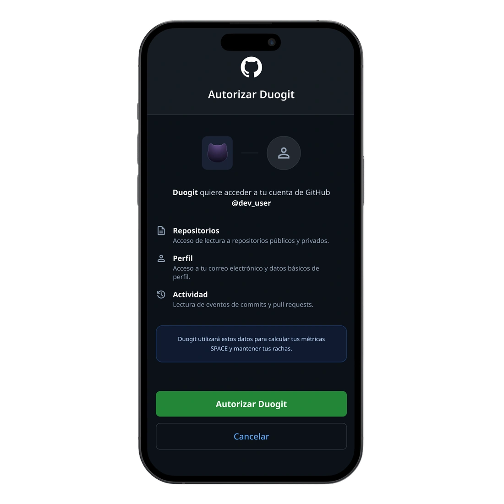
What the connection does
Native GitHub Auth. Uses expo-auth-session for a proper OAuth 2.0 flow — no password stored, no third-party keys, just GitHub's own consent screen.
Automatic Sync. Once authorized, every commit syncs in real time. Streak tracking, SPACE metrics and Liga ranking all update without any manual input.
Read-Only Scope. Minimal permissions — Duogit only reads activity. It never writes, creates, or modifies anything in your repositories.
Implementation
The OAuth screen follows GitHub's native visual language — dark background, GitHub green CTA, familiar consent pattern — so developers authorize without hesitation.
The iOS Widget Family
The widget scales gracefully across three sizes — all designed to live on the home screen, the first thing you see when you unlock your phone. A unified 60/40 zoning model keeps data left, emotional state right, every time.
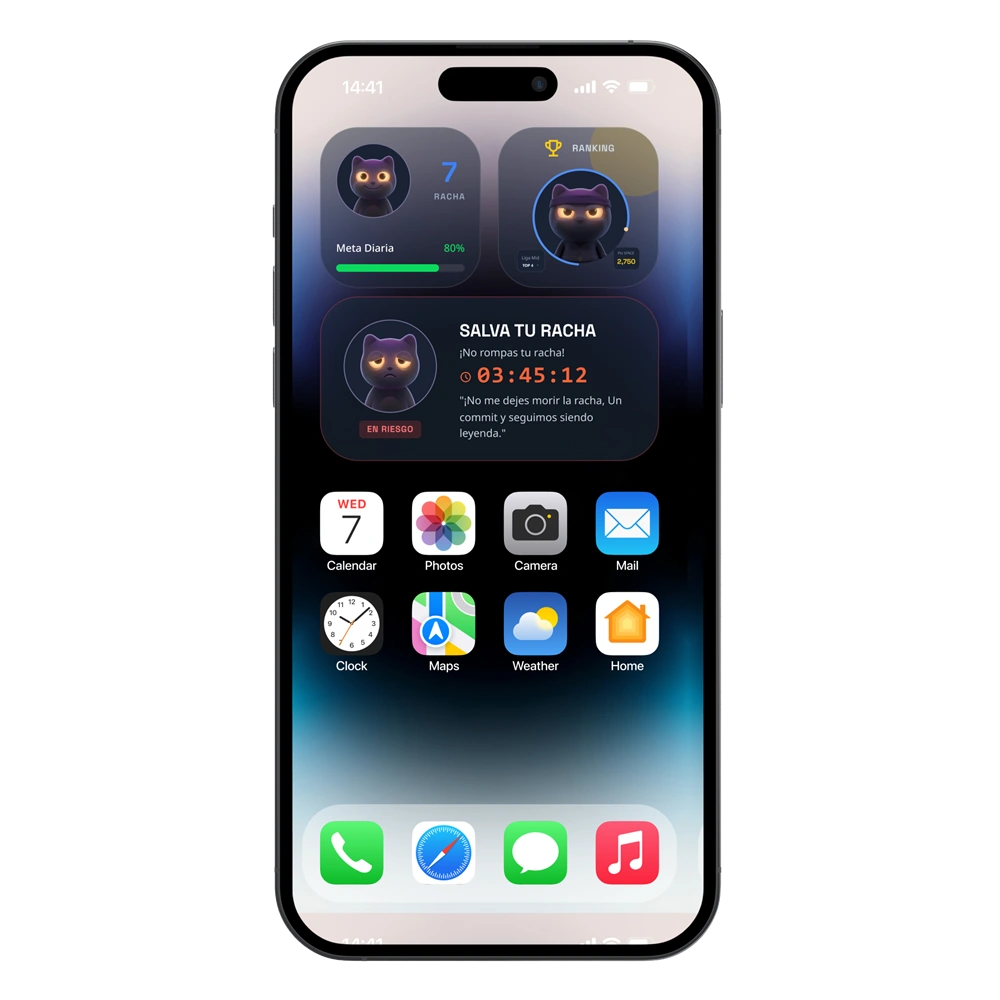
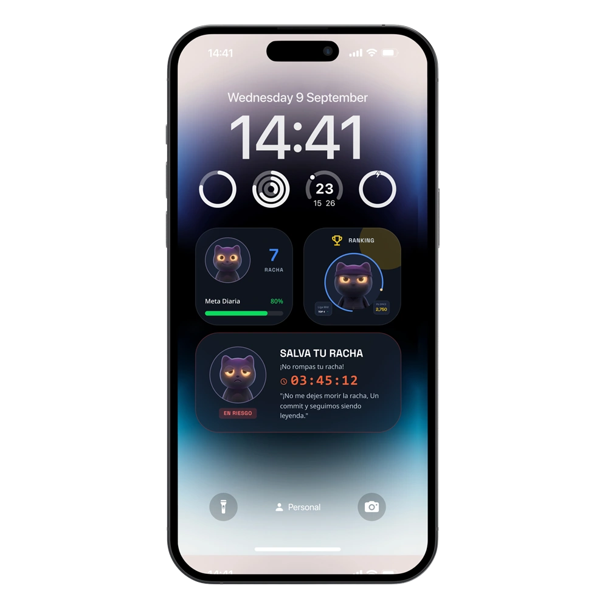
The widget family
Small — Streak at a Glance. Current streak count + happy mascot in a compact 2×2 tile. One look = full context, no app open needed.
Small — Liga Rank. Current league rank and title. Motivates without friction — no need to open the app to know where you stand.
Wide — Streak Alert. Real-time countdown when your streak is at risk. The worried mascot creates urgency without being annoying — emotional design with intent.
Design Principle
A unified 60/40 zoning model across all sizes — data left, emotional state right — ensures instant scanning with zero cognitive load.
The Mobile App — 9 Screens
Beyond the widget, DuoGit ships as a full React Native app. Each screen is purpose-built around a single behavioral goal: making the developer's progress impossible to ignore.
Liga — Competitive Ranking
8 creative developer ranks from Jr Dev 🌱 to 10x Dev 🚀, unlocked by streak consistency. The league screen turns solo habit-building into a social game — without the toxicity.
Design Insight
Ranks reward streak consistency, not raw commit count — sustainable habits over burnout sprints.
Emotional System & Market Position
The app maps directly to specific user feelings during their daily routine. This deliberate anthropomorphism creates an engagement hook that utilitarian tools lack.
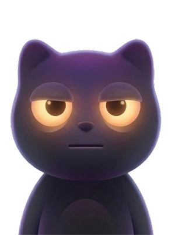
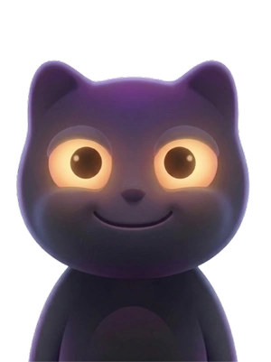
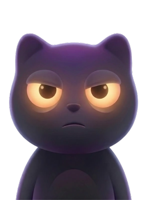
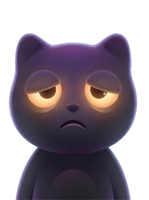
| Feature | DuoGit | GitHub | Duolingo |
|---|---|---|---|
| GitHub API Sync | Yes | Yes | No |
| Emotional Avatar | Yes | No | Yes |
| Home Screen Widget | Next | No | Yes |
| Developer Focus | Yes | Yes | No |
Bringing it all together
DuoGit is not yet in production — these are design targets benchmarked against industry data, not live metrics. The interaction loop is built and testable; the numbers below reflect what success looks like once real users are in.
What's next
The immediate path is GitHub OAuth via expo-auth-session to replace mock data with live commits, followed by the home screen widget — the original trigger for the product concept.
Longer term I'd explore team streaks (shared mascot between coworkers) and unlockable avatar skins per Liga rank — the 4 emotional states are already shipped, new skins per rank would deepen the reward loop without adding friction.
UI Kit built for behavioral clarity
Every visual decision is codified — colors map directly to emotional states, not aesthetics. The system ships as NativeWind tokens inside the React Native codebase.
Color Tokens
Backgrounds
State Colors
Typography
Core Components
MetricCard
Displays a single SPACE metric with icon, trend badge, value and unit. Reused across Dashboard and Metrics screens.
SparkLineChart
Inline SVG line chart for commit activity trends. Renders inside MetricCard without external dependencies.
MascotDisplay
Renders mascot image with glow halo based on state. Accepts size and grayscale props for widget contexts.
NativeWind Tokens
All colors defined as Tailwind extensions — bg-background-dark, text-accent, text-neon-orange — consistent across all screens.